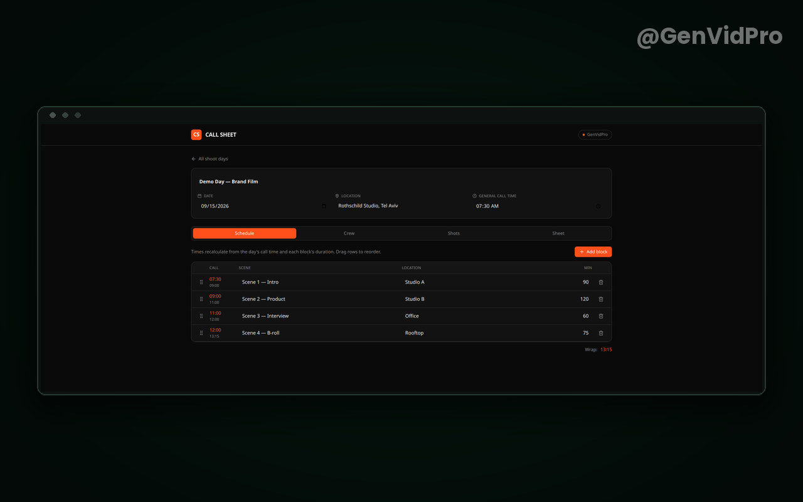
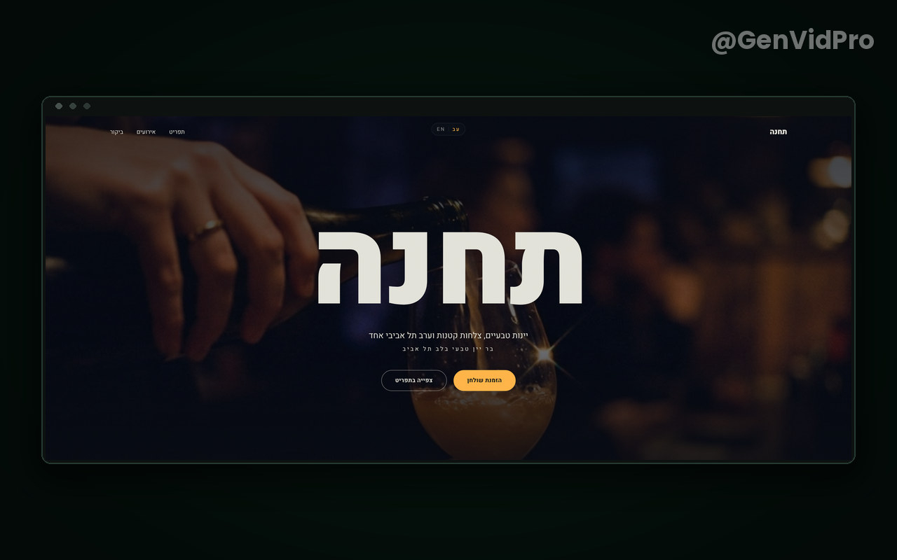
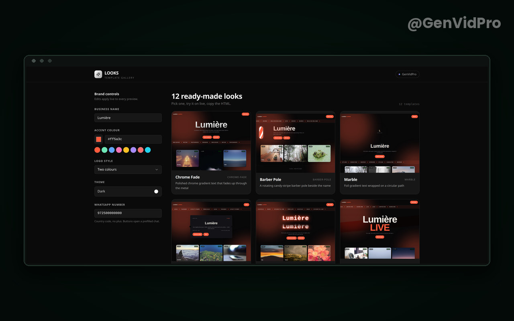

GenVidPro · AppsNEW
Your business.
Your app.
A working app for your small business, built and hosted on Base44 (base44.app), the app platform owned by Wix. Booking, a menu, a catalogue, orders, your crew or your clients. It installs on the phone and opens like any other app. Hebrew and English in one app, right to left where it belongs. Ready in days, not months.
- 01Booking, menu, catalogue, orders, crew or clients. Whatever your work actually runs on.
- 02Installs on the phone straight from the browser. No App Store, no Google Play, no approvals.
- 03Hebrew and English in one app, with the layout turned round where it should be.
- 04A WhatsApp button inside, so a customer writes to you in one tap.
- 05The app sits on Base44 in your own account, so it stays yours from the first day.
We agree what goes in before anything is built. You see the first working version in the first week.
Proof
Three apps you can open right now
Not pictures of apps. Live addresses, open them and press the buttons.

Call Sheet
Production planning for video crews. The day, the crew, the shots, one sheet for everyone.
brilliant-plan-shot-flow.base44.app

Tachana
A concept site for a wine bar, in Hebrew and English. Menu, events, a table booking. Concept, not a client.
tachana-wine-nights.base44.app

Looks
Live website templates that wear your brand. Type a name, pick a colour, every preview changes at once.
looks-live-site.base44.app
The source code of these apps is open: github.com/romachorny
Prices
What it costs
A starting price for each size of job. The exact number comes after the brief, and nothing is built before you agree to it.
Start
2,900 ₪
An app with 2 to 4 screens: a catalogue, a menu or a booking, a WhatsApp button. Installs on the phone.
About 1 week
Business
5,900 ₪
Booking or orders with an owner dashboard, Hebrew and English, notifications, a simple admin.
About 2 weeks
Pro
9,900 ₪ and up
Several user roles, payments, integrations with the other services you already use.
From 3 weeks
The Base44 plan, about 16 to 40 USD a month, is paid by you, and the app account belongs to you.
Want a promo film for the app as well? Order a video from GenVidPro
3
Live apps on this page, open them and try them yourself
7
Days from the brief to the first working version in your hand
2
Languages in one app, Hebrew and English, right to left included